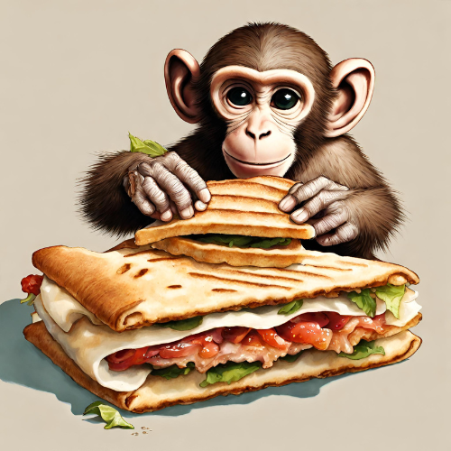

Return to home page
Pita of life

Description
his deceitfully simple pita sandwich recipe has singlehandedly saved me from malnutrition in times of arduous labor and studies.his deceitfully simple pita sandwich recipe has singlehandedly saved me from malnutrition in times of arduous labor and studies.
Ingredients
- 1 Pita bread;
- 3 table spoons of tomato sauce;
- 2-3 slices of any tipe of cheese, although mozarella has been proven to work particularly well;
- 1 portion of tuna, chicken breast, ham, or another protein of your choice;
- 1 handful of arugula leaves, or another leafy green of your choice;
- 1 obligatory dash of spicy sauce;
- 1 pinch of salt and spices of your choice;
- Tomatoes, mushrooms, and veggies of your choice.
Instructions
- Put a frying pan on the stove.
- Lay your pita bread on the frying pan.
- Spread tomato sauce over it.
- Add your cheese, protein, leafy greens, and all of your other ingredients.
- Don't be lazy. If you're using mushrooms, saute them beforehand, or they will taste terrible. Trust me.
- Timing is key here. Aim to have your cheese well melted, your extra ingredients hot, and the pita bread with a nice and crispy golden crust.
- Sprinkle any spices you desire onto your pita, and don't forget to put a dash of hot sauce.
- Fold the pita. It has now become a sandwich.
- Serve it on a plate.
- Wait till they're cool, or till you're cool enough to eat them hot.
- Enjoy!
Back to the top of the page.